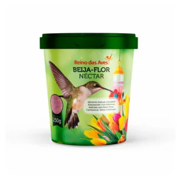

Nectar para Beija-flor 250g

- Preço
- R$ 12,90
- Marca
- Reino das Aves
- Peso
- 250g
- Indicação
- Indicada para beija-flor, cambacica, saira e sanhaco
- Recomendação
- Misturar 2 colheres de sopa bem cheias em um copo de água filtrada (250ml) mexendo até dissolver bem. Servir em bebedouros apropriados que devem ser mantidos à sombra. Após 5 dias, lave bem o bebedouro, inclusive escovando as partes que podem acumular resíduos (como as flores plásticas), antes de abastecer com a nova solução
- Composição
- Dextrose*, sacarose , sorbato de potássio, vitaminas A, C, D, E, K, B1, B2, B6, B12, niacina, acido pantotênico, acido fólico, biotina, corante vermelho bordeaux